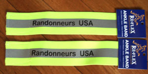
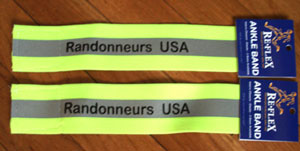

We have SIR logo reflective Sam Browne sash/belts and leg bands available. These are made by
Sayre and are available now at Sammamish Valley Cycle and will be available at the 100km and 200km SIR events.
They are about $11 for the sash/belt and $5/pair for the leg bands (after tax). Randonneurs USA has similar items now available. See http://www.rusa.org/rusaitems.html. RUSA is subsidizing the prices of those items to members, so they are $5 for the sash/belt and $2/pair for the leg bands.
 
